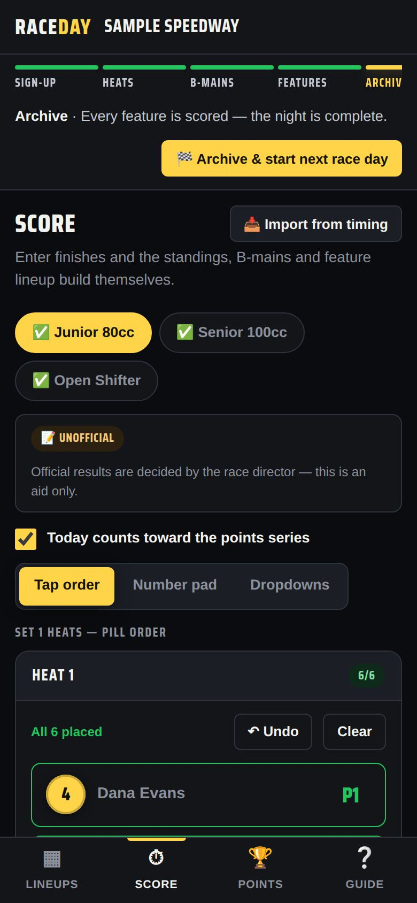
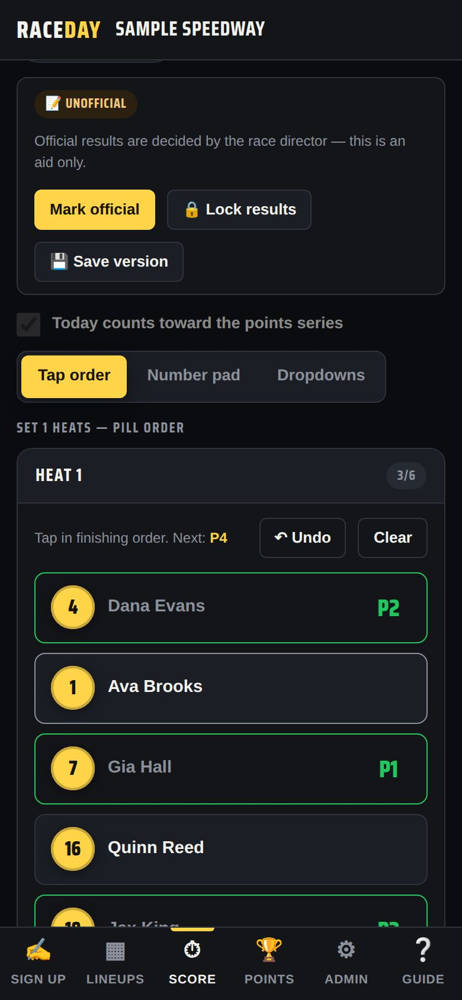
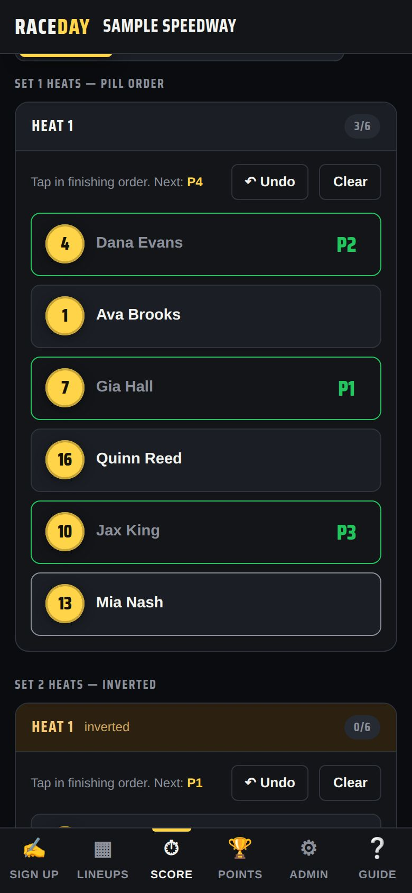
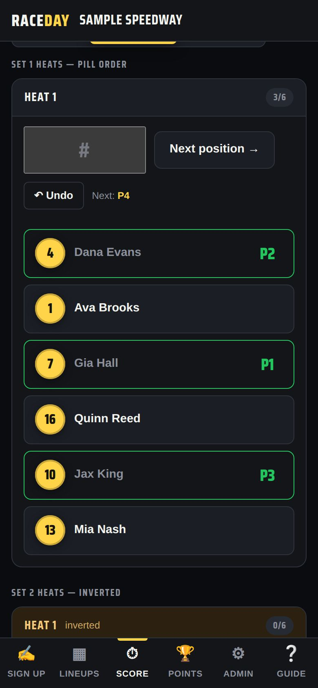
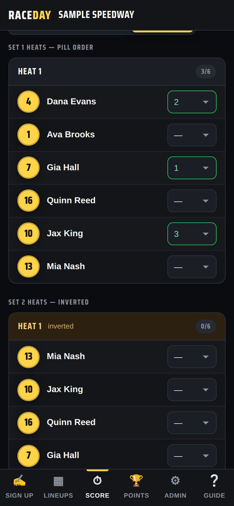
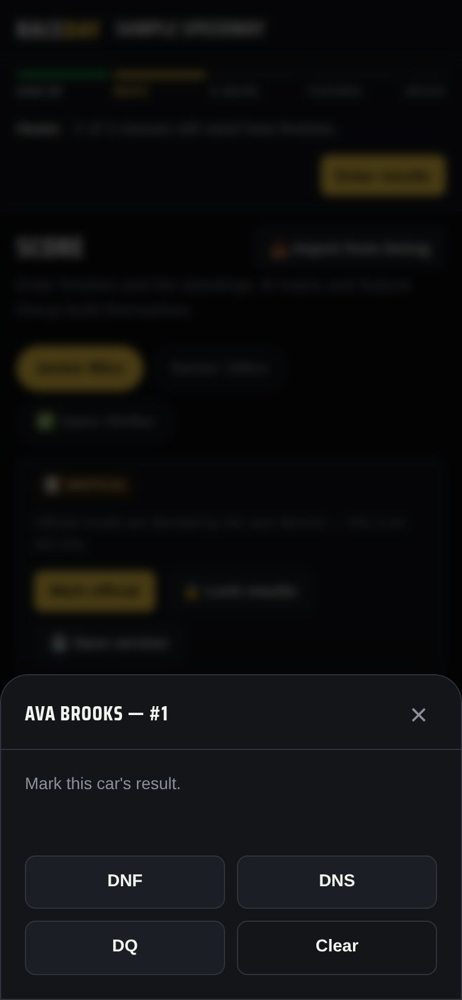
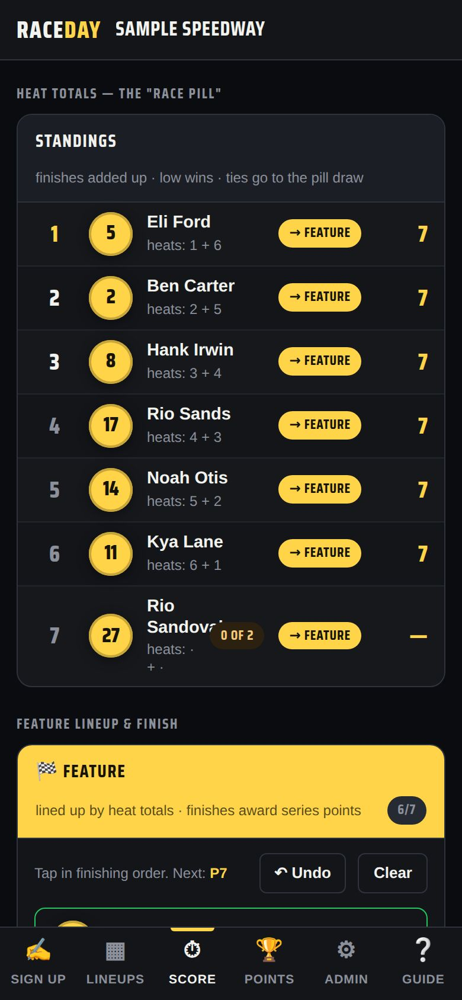
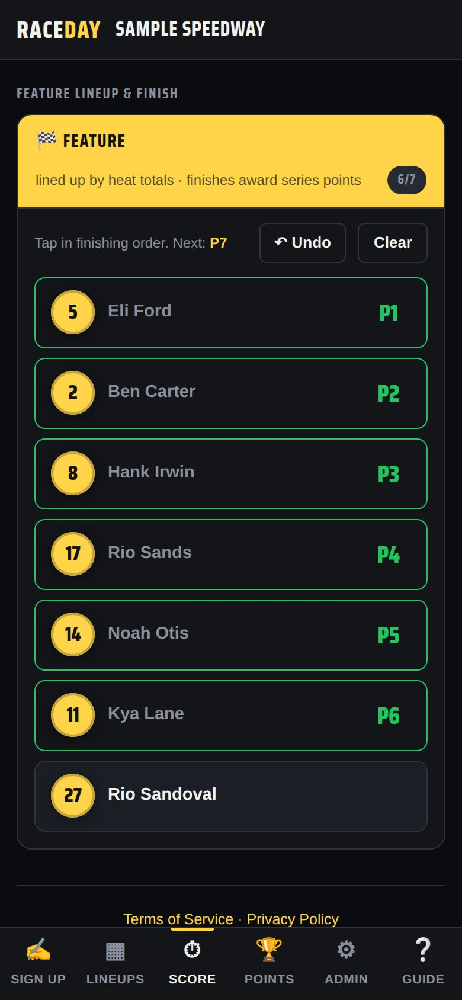

-
Set up the device
Use the main device, or a tablet opened from the Scoring tower link — it shows only Lineups, Score and Points.

Scoring tower device -
Pick a class and an entry style
On the Score tab, tap a class (✅ means it's finished). Choose how you like to enter: Tap order, Number pad or Dropdowns — the device remembers your choice.

Entry styles -
Tap order
Tap each car in the order it finished. The screen shows the next position (“Next: P4”). Tap a placed car again to clear it. ↶ Undo removes the last one; Clear wipes the race.

Tap order -
Number pad
Type the car number and tap Next position → (or press Enter). Fast with a keyboard.

Number pad -
Dropdowns
Pick a finishing position next to each driver — the classic way.

Dropdowns -
DNF, DNS, DQ
Press and hold a car (or right-click on a computer) and choose DNF, DNS or DQ. In Dropdowns mode they're in the list. Each counts as a worse finish than last place.

Marking a DNF -
Heat totals decide the feature
Below the heats, Heat totals adds up each driver's finishes — low wins, ties go to the pill draw. Tags show who goes → Feature or → B-main.

Heat totals -
Score B-mains and the feature
B-mains and the feature appear below as soon as they're set. Score them the same way.

Feature
Good to know
- Have a transponder system? 📥 Import from timing loads results from a CSV — see Qualifying & timing.
- Locked results can't be edited until the race director unlocks or overrides them.
Next guides
Still stuck? The Field Manual walks through every screen, and the FAQ covers common questions. Or just ask.
Email a question →